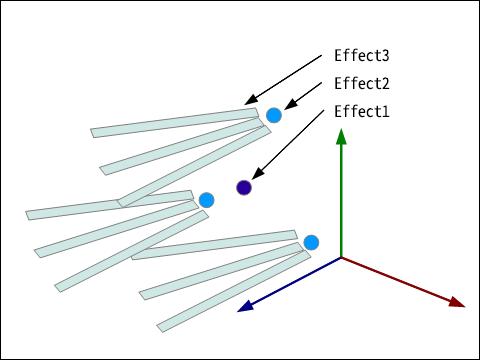
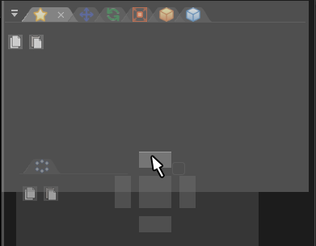

工具参考¶
概述¶
工具¶
这个工具包含一个用来预览特效的视窗和一系列用来编辑特效参数的窗口。通过编辑窗口中的参数，你可以制作特效，修改它的外观和行为。通过拖拽，你可以随心所欲地重新布局这些窗口，或者将它们折叠进选项卡。通过在菜单栏中选择“窗口”，你可以找到不在默认视图中的窗口。而且，你可以将所有窗口恢复到默认位置。
特效¶
在这个工具中，你可以通过编辑节点制作特效。节点具有父子关系，子节点会受到父节点的影响。通过父子关系，得以制作复杂的特效。
我将通过一个例子解释父子关系。在这个例子中，节点2是节点1的子节点，节点3是节点2的子节点。节点1会生成粒子effect 1。几帧后，节点2会在相对于effect 1的位置处会生成一些effect 2粒子。再过几帧后，节点3会在相对于节点2生成的每个粒子的相对位置处生成一些effect 3粒子。下面的图表展示了这种关系。通过使用父子关系描述特效的行为，可以表现出极为丰富的效果。在这个工具中，一个“节点”生成的基于参数的特效被称作一个“粒子”。
如何操作¶
预览¶
| 旋转 | 按住鼠标右键并拖拽鼠标。 |
| 平移 | 按住鼠标中键，或右键+Shift并拖拽鼠标。 |
| 缩放 | 滑动鼠标滚轮，或按住鼠标右键+Ctrl并拖拽鼠标。 |
如何输入值¶
鼠标左键文本输入框，可以输入值。
左键并拖拽文本输入框，可以逐渐改变值。

如何输入颜色¶
除了文本框之外，可以用鼠标左键颜色区域来输入颜色。

左键并拖拽一个颜色区域可以将值复制到另一个颜色区域。

节点树¶
在节点树中，你可以编辑构成特效的节点。 你可以右键添加或删除节点。
你可以拖拽节点来重新布局它们。
你可以点击眼睛图标来切换节点的显示。 你可以按住Shift并单击来切换显示，包括子节点。

面板（窗口）¶
有许多用于编辑特效的参数的面板（窗口）。如果在菜单栏中选择“窗口”，会列出所有可用的窗口。选择其中的一个，会打开相应的窗口。
你可以左键窗口的菜单栏并拖拽窗口来移动它的位置。
你可以将窗口拖放到出现的方块上，将其添加到另一个面板。
你还可以在选项卡之间进行拖放。

文件格式¶
特效文件（efkefc）¶
特效以“efkefc”格式保存在文件中。 这个文件既可以被编辑，也可以在游戏运行时播放。
直到1.4版本，这个功能还是分成两个功能实现，efkproj文件用于在工具中编辑，efk用于在游戏中播放。 为了兼容性，当前版本可以读取efkproj和efk文件。
资源文件¶
特效可引用的资源文件。包括通用文件格式和Effekseer自己的文件格式。
| 扩展名 | 说明 |
|---|---|
| png | 纹理图片文件 |
| wav | 音频文件 |
| efkmat | 材质文件（使用材质编辑器生成） |
| efkmodel | 3D模型文件（从fbx、mqo、gltf、glb、obj、geo、bgeo转换） |
| efkcurve | 曲线参数文件（从fbx转换） |
打包文件（efkpkg）¶
efkpkg文件是包含一个或多个efkefc文件和各种资源文件的包文件。
导出时，特效引用的资源文件会被自动打包进去。它可被导入到其他项目中进行使用。
特效参数¶
特效特性¶
工具方法¶
命令行¶
通过命令行启动Effekseer时，可以通过参数改变Effekseer的行为。例如，你可以在无需打开Effekseer界面的情况下将“.efkproj”文件转换为“.efk”文件。通过与脚本结合，你可以批量转换文件夹下的特效文件。
-cui |
以CUI模式启动 |
-in * |
* 打开并启动 |
-o * |
保存为 * |
-e * |
以标准格式输出到 * |
-m * |
设置以标准格式输出时的放大倍率 |
--materialcache |
生成指定的特效中的所有材质的缓存 |